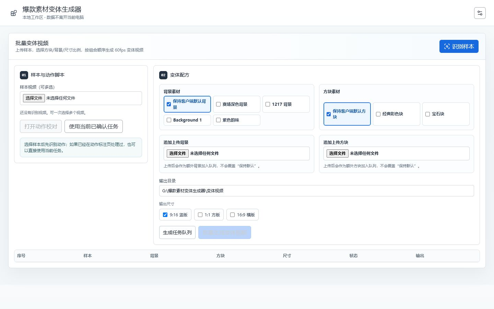
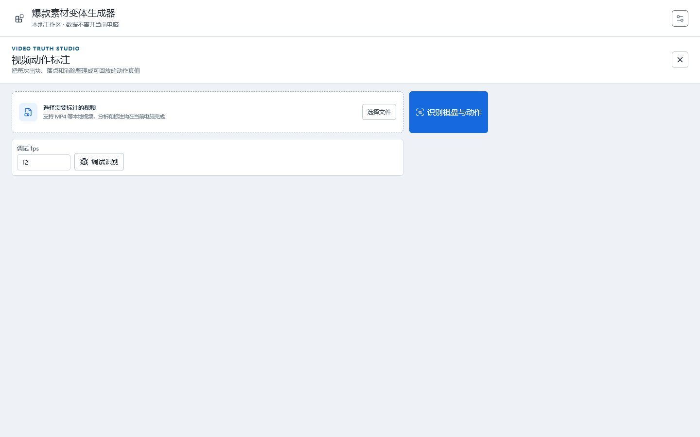

INPUT / 01
上传样本
支持多视频批量导入，读取棋盘区域、底部托盘和动作时间线。
识别并不是终点。项目把视频理解、动作复核、素材替换和 Unity 回放连成闭环，所有低置信结果都可以在生成前被看到、修正和验证。
支持多视频批量导入，读取棋盘区域、底部托盘和动作时间线。
拆解来源槽位、方块形状、棋盘落点、消除状态和稳定画面区间。
逐步核对视觉证据，规则模拟必须能够精确复现后续棋盘。
组合背景、方块素材与 9:16、1:1、16:9 比例，按队列输出视频。

数据来自 2026-07-23 的 8 条常规彩色方块回归集，策略为 color_block_v1。共 167 个真值动作，预测 156 个，匹配 151 个。
DEV-004、DEV-006 已接近完整复现；DEV-008 是召回和形状的主要短板；DEV-011、DEV-012 则更容易产生额外动作。总体均值不能替代逐样本观察。
| 样本 | 预测 / 真值 | FP | 漏检 | Precision | Recall | Shape | Target | Clear |
|---|---|---|---|---|---|---|---|---|
| DEV-001 | 15 / 15 | 0 | 0 | 100.00% | 100.00% | 86.67% | 86.67% | 86.67% |
| DEV-002 | 14 / 18 | 0 | 4 | 100.00% | 77.78% | 85.71% | 92.86% | 100.00% |
| DEV-003 | 22 / 26 | 0 | 4 | 100.00% | 84.62% | 86.36% | 95.45% | 90.91% |
| DEV-004 | 30 / 30 | 0 | 0 | 100.00% | 100.00% | 100.00% | 100.00% | 93.33% |
| DEV-006 | 19 / 19 | 0 | 0 | 100.00% | 100.00% | 100.00% | 100.00% | 100.00% |
| DEV-008 | 15 / 22 | 0 | 7 | 100.00% | 68.18% | 60.00% | 86.67% | 66.67% |
| DEV-011 | 21 / 19 | 3 | 1 | 85.71% | 94.74% | 77.78% | 94.44% | 94.44% |
| DEV-012 | 20 / 18 | 2 | 0 | 90.00% | 100.00% | 72.22% | 83.33% | 72.22% |
当前管线把动作是否存在绑定在棋盘稳定态上，又常用消除后的棋盘差分倒推形状。后处理能修已生成的动作，却救不回根本没有生成的动作。
快动作、落子即消或短暂过渡没有形成独立稳定态时，动作候选不会出现，形成 recall 天花板。
消除、阴影和半贴合会改变棋盘差分；用它覆盖托盘中更干净的方块形状，容易造成 shape 与 clear 连锁错误。
漏检导致动作配对错位，形状、槽位、落点指标会一起被污染。新评测已开始拆分 action count 与 aligned 指标。
批量配方、视频标注、校准、真值进度和生成队列。
variant_bridge.py 调度 timeline_analyzer.py，输出候选和可回放脚本。
替换素材、按目标比例填满画面、保留声音并由录制收尾器输出成片。
连续多轮序列过滤与补漏实验已进入平台期。下一阶段不再围绕两个样本反复调阈值，而是先建立托盘逐槽真值，再翻转 shape / slot 的证据优先级。
增加 actionCountExact、matchedAligned、分场景报表；代码和单测已完成，可信基线仍需扩到计划中的 12 条调优集。
tray_shape_grid_refine_v1 已完成并通过 8 条 A/B；动作级无收益也无回归，为 C2 提供置信度。
设计和实现计划已完成；下一步标注 DEV-008、DEV-004、DEV-011，直接区分“槽没检出”和“形状拆错”。
高质量托盘形状优先于被消除污染的棋盘差分；棋盘继续负责 target 与 clear。
让“槽清空”独立触发动作候选，并识别下一轮槽位重新填充，直接处理漏检。
自动接受高置信且规则复现一致的动作；低置信组件按影响排序进入复核。
仅当托盘真值证明像素阈值达到上限时，用于单格占用或槽内形状分类；规则模拟闸门始终保留。
所有优化先由开关隔离，再做 baseline、单项和组合 A/B。负向结果不会进入默认路径，从而避免“看起来聪明、整体却退化”的改动。
指标无变化，保留为诊断能力。
增加假动作，precision 明显下降。
DEV-008 召回从 63.64% 降至 22.73%。
过滤过强，召回下降。
与 baseline 完全一致。
单步修补没有推动整体指标。
没有增加真匹配，反而引入误报。
两样本上 shape / semantic / clear 各 +2.22pp，规模不足以转正。
8 条回归集完全零变化、零回归。
所有自动修正必须保持合法落点与后续棋盘一致。

标注工作台不是算法失败后的补丁，而是产品安全边界。机器先完成高置信部分，操作者只处理真正有歧义的动作。
项目保持本地优先：浏览器负责交互，本地 Python bridge 负责识别和任务调度，Unity 客户端负责确定性回放与录制。
index.html变体生成主页、批量样本、素材配方、系统工具入口与本地 API 调用。
annotation-studio.*视频动作标注、证据帧、时间区间、落点棋盘和确认流程。
variant_bridge.py本地 HTTP 服务、任务缓存、真值保存、Unity 配置和回放调度。
timeline_analyzer.py棋盘、托盘、稳定态、动作候选和时序证据的视觉识别核心。
truth_benchmark.py动作检测、语义识别、aligned 指标与按场景评测。
recording_finalizer.py画面比例填满、音频合流与最终视频收尾。
scripts/真值重跑、A/B 实验、诊断和后续托盘逐槽评测脚本。
tests/104 项自动测试，覆盖棋盘视觉、托盘拆格、评测与实验框架。
docs/验收标准、架构改造、实验记录、托盘真值设计与实施计划。